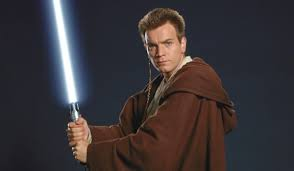
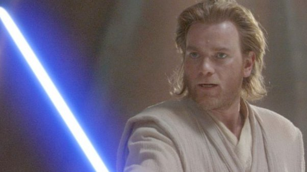
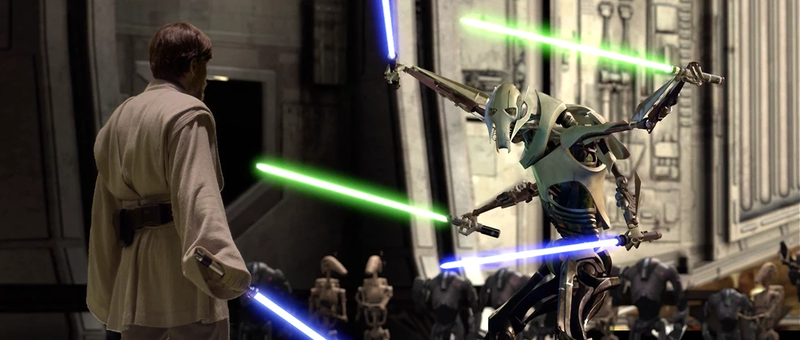

Obi-Wan Kenobi was a legendary Force-sensitive human male Jedi Master who served on the Jedi High Council during the final
years of the Republic Era. As a Jedi General, Kenobi served in the Grand Army of the Republic that fought against the
Separatist Droid Army during the Clone Wars. Kenobi, however, was forced into exile as a result of the Great Jedi Purge.
As a mentor, Kenobi was responsible for training two members of the Skywalker family, Anakin and Luke Skywalker, both of
whom served in turn as his Padawan in the ways of the Force.
Early Days

He was born on the planet Stewjon in 57 BBY. He was Force-sensitive, and therefore taken from his family and
inducted into the Jedi Order as a child. He trained under Jedi Master Qui-Gon Jinn who later died in a duel against a
Sith called Darth Maul. After his Master died, Obi-Wan obtained the title Jedi Knight after killing Darth Maul and thus
taking Anakin Skywalker as his Padawan (something like a student) to fufil his Master's dying wish.
Clone Wars

Some time later in 22 BBY Obi-Wan and Anakin were tasked protect a Senator called Padme Amidala from the planet of Naboo.
Later at night, an assasination attempt was carried out by Zam Wesell. So in pursuit, Obi-Wan jumped out of the Senator's
room and onto the droid that was sent to kill the Senator. When the droid was shot by Wesell in an attempt to kill Obi-Wan,
Anaking was fast enough to use a ship and catch Obi-Wan from underneath. They then carried on to pursue Zam Wesell but they
failed as Wesell was killed by a bounty hunter (Jango Fett) to prevent him from revealing any information. However, Jango Fett
used a dart to kill Wesell, thus they had a lead on where he came from. Kenobi then went to the Jedi Archive's then to Yoda as
the dart could not be traced. In the end, he traced the dart to the planet Kamino and flew there to investigate. While being on
the Kamino, he discovered that a deceased Jedi Master, Sifo-Dyas had ordered a clone army for the Republic. After discovering
that the "template" for the clones was Jango Fett he asked to see him. Unfortunately, it turned into a wild chase to the planet
Geonosis. On the planet Geonois, ObiWan, Anakin and Padme were all captured and needed to fight creatures on the planet to
entertain the Geonosians. Fortunately, the rest of the Jedi and the clones came just in time. However, the Sith Lord, Count Dooku
escaped despite being fought in a fierce battle with Obi-Wan, Anakin as well as Grandmaster Yoda.
The End

Obi-Wan in an intense battle with Grevious
We then see Obi-Wan again in Revenge of the Sith, where in his famous battle with General Grevious, one of the General's
in the Separatist agency, kills him once and for all. However, at the end of the movie, he is betrayed by his apprentice and
has to go into hiding to the Rise of the Empire. In this fury of betryal Anakin kills his own wife Padme. However before
dying, she gives birth to twins. Luke, one of the twins, is taken to Tattooine where Obi-Wan can keep watch on him while
he is in Anakin's relatives care. Leia, the other twin, is then taken to Bail Organa, a Senator of Alderaan. He then appear
again in the fourth movie, A New Hope where he is killed and becomes one with the Force and thus becoming a force ghost.
As, a force ghost he still continued to mentor Luke. His voice is heard again in the final movie the Rise of Skywalker to
encourage Rey, the main character for that movie, to get up and fight Palpatine.